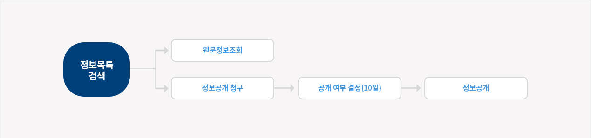

정보공개 제도 안내

1.정보공개 청구
- 청구인은 원하는 정보가 있을 경우 정보공개시스템(www.open.go.kr)에서 원문을 조회하거나 이를 보유·관리하는 공공기관에 정보공개 청구서를 기재하여 제출합니다.
- 청구서 기재사항
청구인의 이름·주민등록번호 및 주소 청구하는 정보의 내용, 정보형태, 공개방법 등 * 청구인이 공공기관에 우편·팩스 또는 직접 출석하여 제출하거나 정보 공개시스템(www.open.go.kr)을 통해 청구서를 제출할 수 있습니다. - 청구를 받은 공공기관은 정보공개처리대장에 기록하고 청구인에게 접수증을 교부하고, 접수부서는 이를 담당부서 또는 소관기관에 이송하게 됩니다.
2. 공개여부의 결정
- 공공기관은 청구를 받은 날부터 "10일" 이내에 공개여부를 결정해야 하며, 부득이한 경우 10일의 범위내에서 연장할 수 있습니다.
- 공공기관은 청구정보가 제3자와 관련이 있는 경우 제3자에게 통보하고 필요한 경우 그 의견을 청취하여 결정하게 됩니다.
- 제3자의 비공개요청 : 공개청구된 사실을 통보받은 제3자는 의견이 있을 경우 통지받은 날로부터 "3일" 이내에 당해 공공기관에 공개하지 아니할 것을 요청할 수 있습니다.
- 정보공개심의회 심의 : 국가기관·지방자치단체·정부투자기관은 공개청구된 정보의 공개여부를 결정하기 곤란한 사항과 이의신청사항을 심의하기 위하여 정보공개심의회를 설치·운영합니다.
- 청구를 받은 공공기관은 정보공개처리대장에 기록하고 청구인에게 접수증을 교부하고, 접수부서는 이를 담당부서 또는 소관기관에 이송하게 됩니다.
3. 정보공개
- 공공기관이 정보의 공개를 결정한 때에는 공개일시·공개장소 등을 명시하여 청구인에게 통지하되, 공개를 결정한 날로부터 "10일" 이내에 공개해야 합니다.
- 공개청구량이 과다하여 정상적인 업무수행에 현저한 지장을 초래할 우려가 있는 경우 정보의 사본 · 복제물을 먼저 열람하게 한 후 일정기간별로 교부하되 2개월 이내에 완료하여야 합니다.
- 비공개정보와 공개정보가 혼합되어 분리가능한 경우 공개청구의 취지에 부합하는 범위내에서 부분공개가 가능합니다.
- 공공기관이 정보를 비공개로 결정한 때에는 비공개사유·불복방법 등을 명시하여 청구인에게 지체없이 문서로 통지하여야 합니다.
- 정보공개 방법
- 문서, 도면, 카드, 사진 등 : 열람 또는 사본의 교부
- 필름, 녹음 · 녹화테이프 등 : 시청 또는 인화물 · 복제물 교부
- 마이크로필름, 슬라이드 등 : 시청·열람 또는 사본 · 복제본의 교부
- 전자적 형태로 보유·관리하는 정보 : 파일을 복제하여 정보통신망을 활용한 정보공개시스템으로 송부, 매체에 저장하여 제공,열람·시청 또는 사본·출력물의 제공